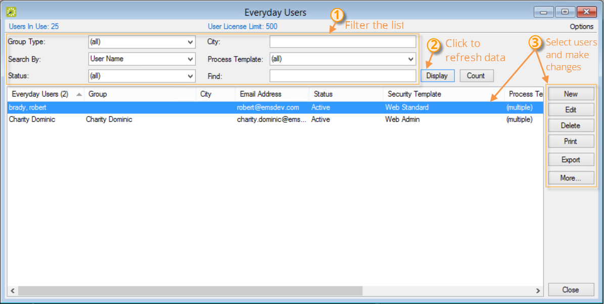

If your organization has reached your limit of licensed everyday users, you will no longer be able to create additional users. To get back under your maximum number of users, you can either deactivate or delete users from
If you have previously used older versions of EMS, you might know these templates as "Web Process Templates." These templates are now called "Everyday User Process Templates."
To deactivate users, select them, click the Edit button and set the Status field to Inactive.

Everyday Users Menu
If you use HR Toolkit, users that are no longer part of the feed or part of your organization will automatically be deactivated.
A License Notification message will display when opening the Desktop Client if the user license has been exceeded.